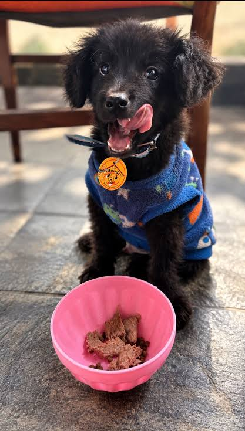
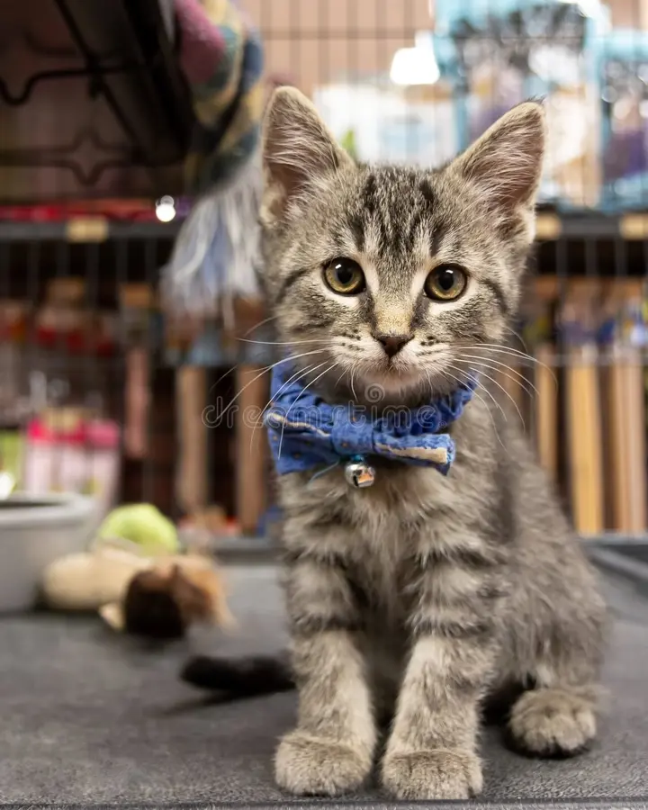
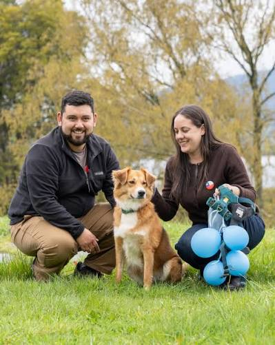

Rocky
Edad: 1 año y medio
Tamaño: Mediano
Muy juguetón, sociable con personas y le encanta salir a pasear.
Todos nuestros perritos y gatitos rescatados cuentan con evaluación de salud y están en busca de un hogar donde reciban mucho cariño.

Edad: 1 año y medio
Tamaño: Mediano
Muy juguetón, sociable con personas y le encanta salir a pasear.

Edad: 8 meses
Tamaño: Pequeño
Tranquila, cariñosa y muy acostumbrada a estar dentro de casa.

Edad: 3 años
Tamaño: Grande
Fiel, obediente y un excelente compañero de vida.